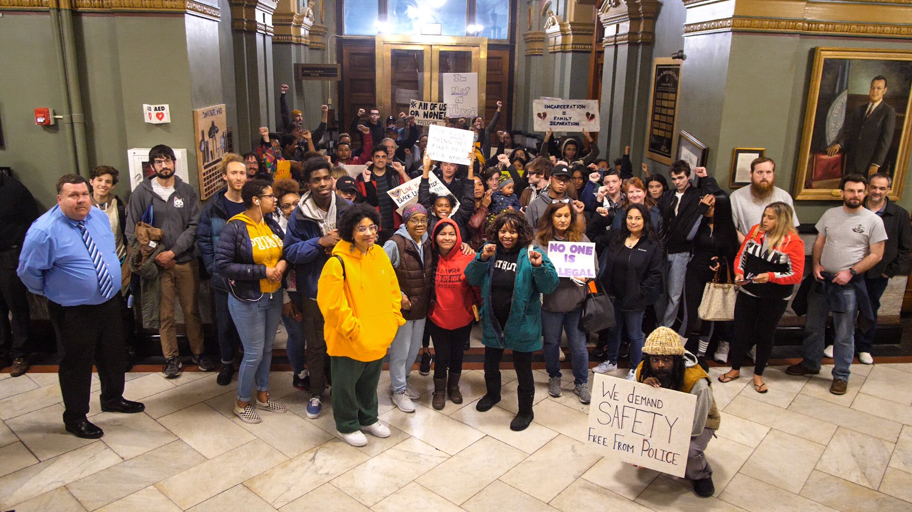
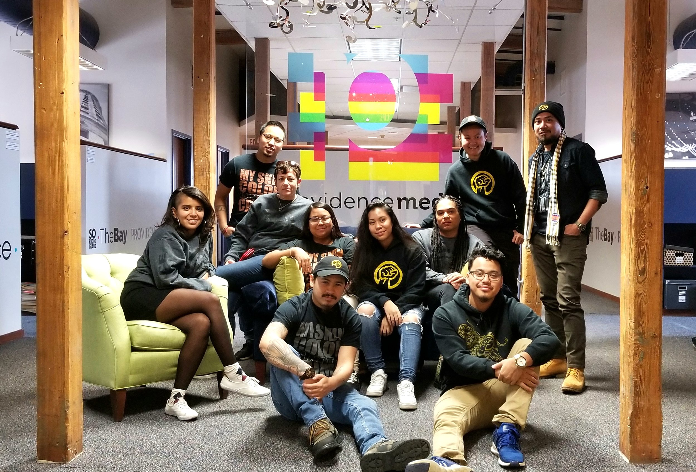
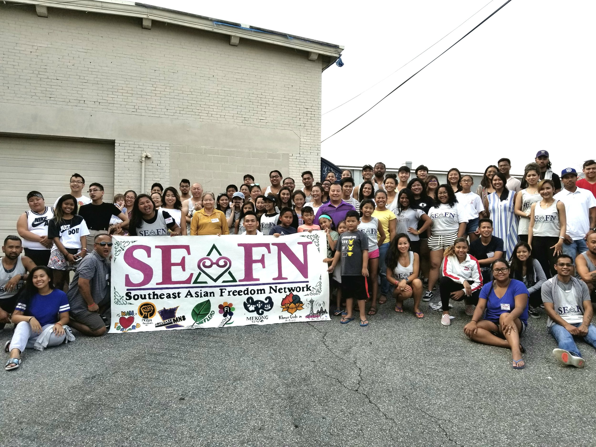
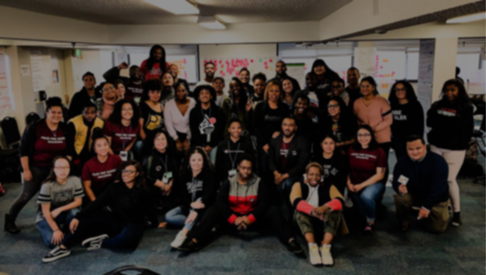
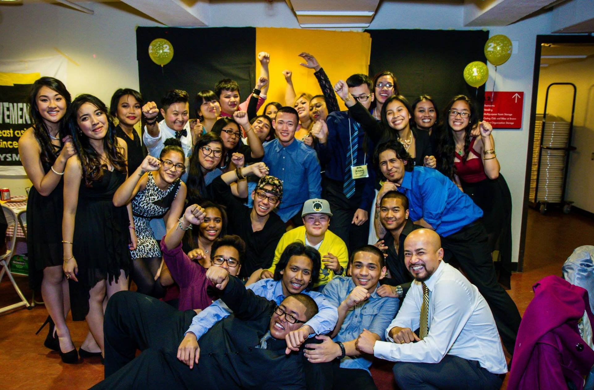

Peace
We must confront and end cycles of violence in our communities. PrYSM must work towards transforming our communities by building safe spaces that foster accountability, healing, and dialogue.
Providence Youth Student Movement envisions a strong, healthy Southeast Asian community free from state, street, and interpersonal violence.
Beliefs
We believe in keeping our communities safe without policing, prisons, and borders.
We build community power through relationships, education, and collaboration.
We represent generations of strength and struggle, of refugee resilience and resistance.
We fight to keep our families together.





History
As our communities continue to grow and develop, we have found resilience to be our greatest strength. However, we continue to face systemic oppression that keeps our communities disenfranchised.
“In 2000, Sarath Suong and Kohei Ishihara, two Asian American students at Brown University, recruited local Black, Caribbean, and SEAA students at other colleges in Providence to start a local youth group, Providence Youth-Student Movement, or PrYSM.
Due to the diversity of their membership, PrYSM’s vision for the organization was to build a space for local Lesbian, Gay, Bisexual, Transgender, Questioning, and others (LGBTQ+), and those who identify as Southeast Asian American youth in a social justice movement to represent the intersections of their sexuality, poverty, immigration, and race and ethnicity.
Since there were virtually no similar groups in the city, PrYSM soon became a multi-racial space for other queer youth of color in working-class sections of Providence who did not have such spaces in their schools, colleges, or neighborhoods.”
Mission
PrYSM organizes at the intersections of race, class, gender, and sexual orientation by centering youth, female, queer, and people of color leadership in our campaigns, our organization, and our communities.
Values
We must confront and end cycles of violence in our communities. PrYSM must work towards transforming our communities by building safe spaces that foster accountability, healing, and dialogue.
Social justice, community organizing, and institutional change must be rooted in compassion and unity. Love for ourselves, our families, and our communities must guide PrYSM’s work, actions, and collective vision.
We must shift power into the hands of the people through direct action, base building, community coalitions, and youth organizing. PrYSM builds power by centering the experiences of the most oppressed and developing local grassroots leadership.